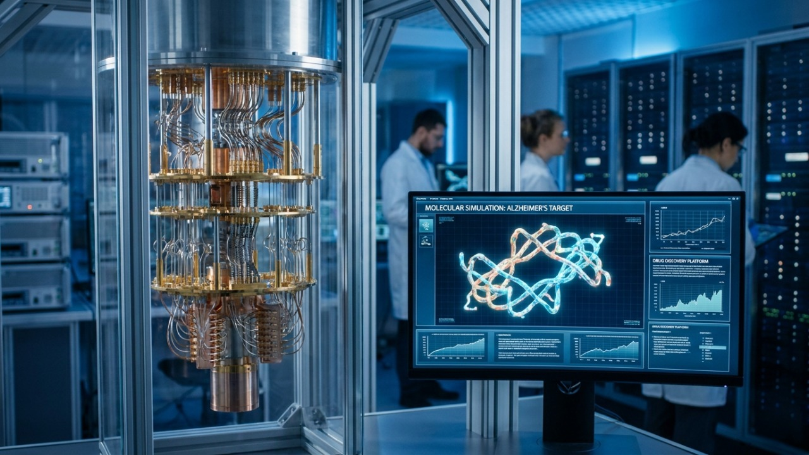

A Nova Era do Processamento de Dados
A principal utilidade do computador quântico está na sua capacidade de resolver cálculos matemáticos e simulações de alta complexidade em poucos minutos, uma tarefa
os supercomputadores tradicionais levariam milhares de anos para concluir. Essa tecnologia inovadora não foi projetada para substituir os computadores que usamos
dia a dia, mas sim para solucionar problemas globais que hoje permanecem sem resposta devido às limitações de tempo e memória dos sistemas atuais. Ao processar dados de uma
ma totalmente nova, ela abre portas para descobertas científicas que antes pareciam impossíveis.

Transformação na Saúde e na Ciência de Materiais
Na área da medicina e da farmacologia, o computador quântico acelera drasticamente a descoberta de novos medicamentos e vacinas ao simular com precisão absoluta as reações
químicas e o comportamento de moléculas complexas. Esse mesmo poder de simulação molecular é aplicado na ciência dos materiais para o desenvolvimento de ligas metálicas
mais leves e resistentes, além de baterias de altíssima duração para veículos elétricos e painéis solares muito mais eficientes, impulsionando a transição para energias limpas.
Segurança da Informação e Logística Global
O impacto dessa tecnologia estende-se também à segurança digital e à eficiência operacional das empresas. A computação quântica possui a capacidade de quebrar os sistemas
de criptografia tradicionais antigos através da fatoração matemática acelerada, ao mesmo tempo em que permite a criação de redes de comunicação quântica totalmente invioláveis.
Na logística e nas finanças, ela otimiza cadeias de suprimentos globais ao calcular rotas perfeitas instantaneamente e analisa múltiplos cenários econômicos simultâneos
para prever riscos de mercado com precisão milimétrica.